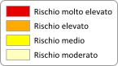

<!DOCTYPE html>
<html lang="it">
<head>
	<meta property="og:title" content="Il rischio idrogeologico, la Regione Siciliana e l'informazione civica: il rischio Frane della Regione Siciliana" />
	<meta property="og:type" content="website" />
	<meta property="og:url" content="http://opendatasicilia.it/2014/10/27/rischio-idrogeologico-regione-siciliana-linformazione-civica/" />
	<meta property="og:image" content="http://siciliahub.github.io/mappe/rischio_frane/imgs/share.jpg" />    
	<meta charset="utf-8">
	<meta name='viewport' content='initial-scale=1,maximum-scale=1,user-scalable=no' />
	<meta charset="UTF-8">
	<title>Rischio Frane - Regione Siciliana</title>
	
	<link href='https://api.tiles.mapbox.com/mapbox.js/v2.1.2/mapbox.css' rel='stylesheet' />

	
	<link rel="stylesheet" type="text/css" href="./css/stile.css">
	
	<link href='https://api.tiles.mapbox.com/mapbox.js/plugins/leaflet-minimap/v1.0.0/Control.MiniMap.css' rel='stylesheet' />

	<script src='https://api.tiles.mapbox.com/mapbox.js/v2.1.2/mapbox.js'></script>

	<script src='https://api.tiles.mapbox.com/mapbox.js/plugins/leaflet-minimap/v1.0.0/Control.MiniMap.js'></script>

	
	<script src='https://api.tiles.mapbox.com/mapbox.js/plugins/leaflet-hash/v0.2.1/leaflet-hash.js'></script>

	<script src='https://api.tiles.mapbox.com/mapbox.js/plugins/leaflet-locatecontrol/v0.24.0/L.Control.Locate.js'></script>
	<link href='https://api.tiles.mapbox.com/mapbox.js/plugins/leaflet-locatecontrol/v0.24.0/L.Control.Locate.css' rel='stylesheet' />
<!--[if lt IE 9]>
  <link href='https://api.tiles.mapbox.com/mapbox.js/plugins/leaflet-locatecontrol/v0.21.0/L.Control.Locate.ie.css' rel='stylesheet' />
  <![endif]-->
</head>
<body>
	<div id="map">
<!-- 		<div id="map-ui">
			<p>La carta del rischio frane per <strong><a href="http://opendatasicilia.it/2014/10/27/rischio-idrogeologico-regione-siciliana-linformazione-civica/" target="_blank">OpenDataSicilia</a></strong></p>
		</div> -->
	</div>


	<script>

	var southWest = L.latLng(36.61535,11.93834),
	northEast = L.latLng(38.57218,15.78952),
	bounds = L.latLngBounds(southWest, northEast);

	var southWestB = L.latLng(34.61535,9.93834),
	northEastB = L.latLng(40.57218,17.78952),
	boundsB = L.latLngBounds(southWestB, northEastB);

	var map = L.map('map',{
		maxBounds: boundsB,
		minZoom:4,
		maxZoom:16,
		legendControl: {
        position: 'topright'
    	}
	})

    map.legendControl.addLegend('La carta del rischio frane per <strong><a href="http://opendatasicilia.it/2014/10/27/rischio-idrogeologico-regione-siciliana-linformazione-civica/" target="_blank">OpenDataSicilia</a></strong>');
    
	var layer = L.tileLayer('http://{s}.acetate.geoiq.com/tiles/acetate/{z}/{x}/{y}.png',{
		attribution: 'Acetate tileset from GeoIQ',
		opacity:1
	});

	var realvista = L.tileLayer.wms("http://213.215.135.196/reflector/open/service?", {
		layers: 'rv1',
		format: 'image/jpeg',
		attribution: "Ortofoto: <a target='_blank' href='http://www.realvista.it/website/Joomla/'>RealVista1.0</a>"
	}).addTo(map);	

	var layermini = L.tileLayer('http://{s}.acetate.geoiq.com/tiles/acetate/{z}/{x}/{y}.png',{
		attribution: 'Acetate tileset from GeoIQ',
	}
	);


	var rischio_frana = L.tileLayer.wms("http://map.sitr.regione.sicilia.it/ArcGIS/services/PAI_F33/Geomorfologia_Rischio_f33/MapServer/WMSServer", {
		layers: '0',
		format: 'image/png',
		transparent: true,
		attribution: "Dati: <a target='_blank' href='http://www.sitr.regione.sicilia.it/geoportale/it/metadata/details/159'>Regione Siciliana</a>",
		opacity: 0.7
	}).addTo(map);

	var rischio_frana_agg = L.tileLayer.wms("http://map.sitr.regione.sicilia.it/ArcGIS/services/PAI_F33/Geomorfologia_Rischio_Agg_f33/MapServer/WMSServer", {
		layers: '0',
		format: 'image/png',
		transparent: true,
		opacity: 0.7
	}).addTo(map);	
	
	map.fitBounds(bounds);

	var hash = new L.Hash(map);

	var miniMap = new L.Control.MiniMap(layermini, { toggleDisplay: true }).addTo(map);

	L.control.locate().addTo(map);

	var legend = L.control({position: 'bottomleft'});

	legend.onAdd = function (map) {

		var div = L.DomUtil.create('div', 'info legend');

		div.innerHTML = '<a border="0" title="classificazione rischio" target="_blank" href="http://www.provincia.pu.it/protezionecivile/piano-provinciale-di-emergenza/lanalisi-dei-rischi/il-rischio-idrogeologico/"></a>';

		return div;
	};

	legend.addTo(map);

	

	</script>
</body>
</html>